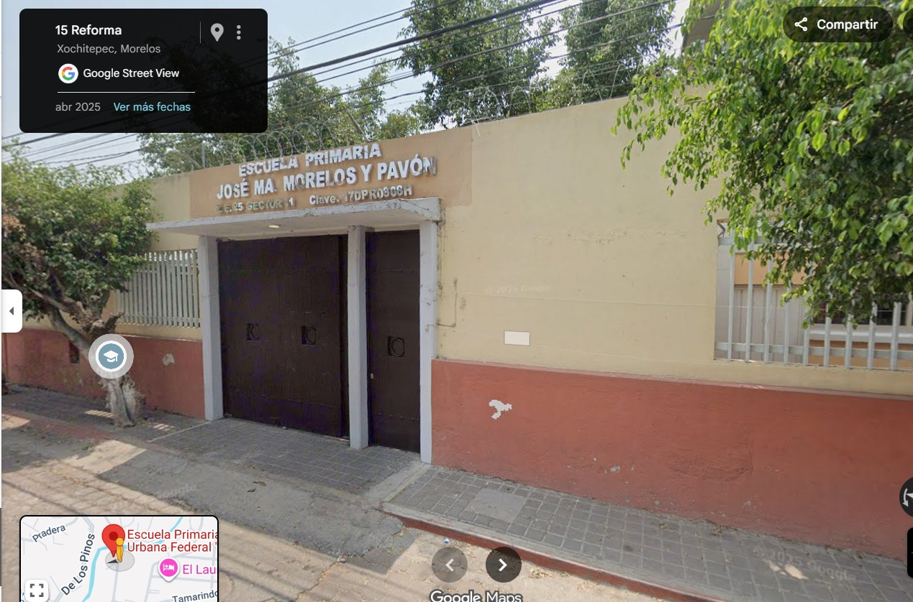

La Escuela Primaria José María Morelos y Pavón se encuentra en:
En el corazón de Xochitepec, Morelos, nuestra escuela primaria es un espacio donde el aprendizaje y la convivencia van de la mano. Atendemos a 210 alumnos distribuidos en 7 grupos de 1° a 6° grado, formando parte de la zona escolar #25 del sector educativo No. 1. Impulsamos una educación basada en valores a través de nuestros Acuerdos de Convivencia, construidos en conjunto con docentes y familias, creando un entorno seguro, respetuoso y enfocado en el desarrollo integral de cada estudiante.
🕒 Horario: Lunes a viernes: 8:00 a 13:00 hrs